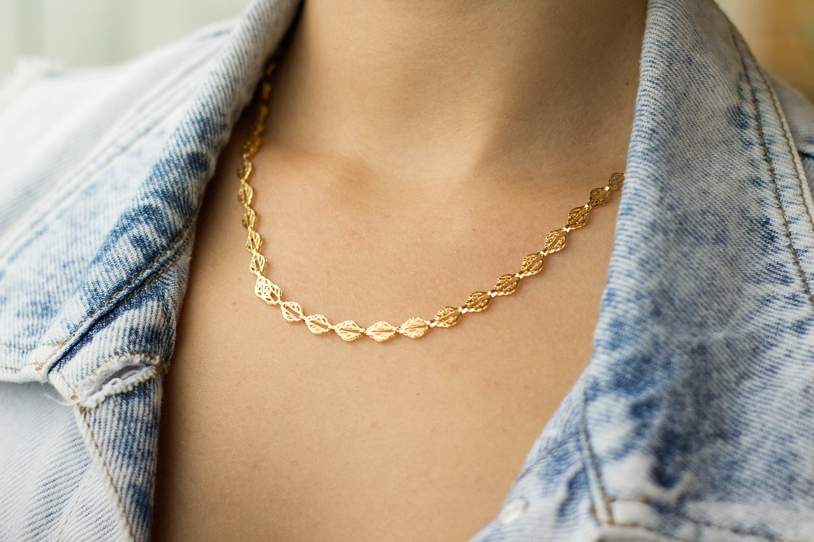
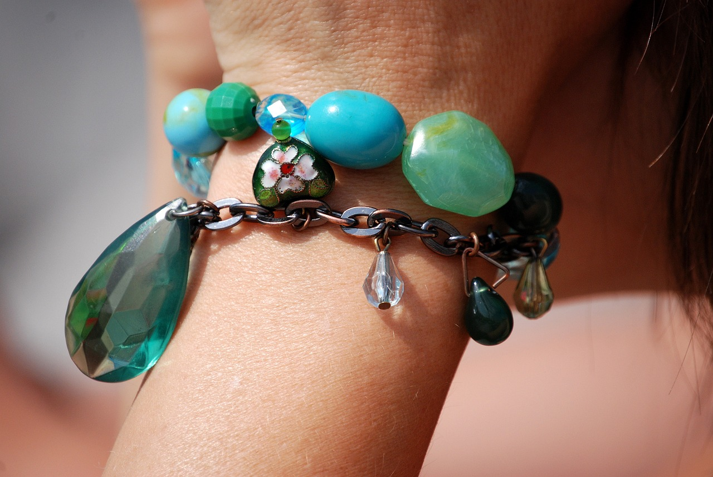

<div class="p-3 m-0 border-0 bd-example m-0 border-0">

  <div id="carouselExample" class="carousel slide">
    <div class="carousel-inner">
      <div class="carousel-item">
        
      </div>
      <div class="carousel-item">
        
      </div>
      <div class="carousel-item active">
        
      </div>
    </div>
    <button class="carousel-control-prev" type="button" data-bs-target="#carouselExample" data-bs-slide="prev">
      <span class="carousel-control-prev-icon" aria-hidden="true"></span>
      <span class="visually-hidden">Previous</span>
    </button>
    <button class="carousel-control-next" type="button" data-bs-target="#carouselExample" data-bs-slide="next">
      <span class="carousel-control-next-icon" aria-hidden="true"></span>
      <span class="visually-hidden">Next</span>
    </button>
  </div>
</div>

<app-secciones></app-secciones>

<h3 id="favorito">Tus favoritos</h3>

<div class="favoritos">
  @for (item of items; track $index) {
  <app-producto></app-producto>
  }
</div>